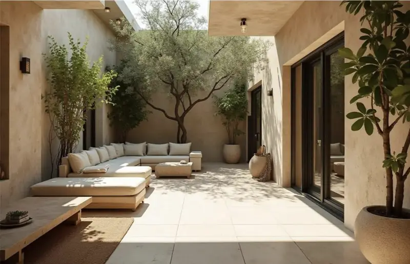
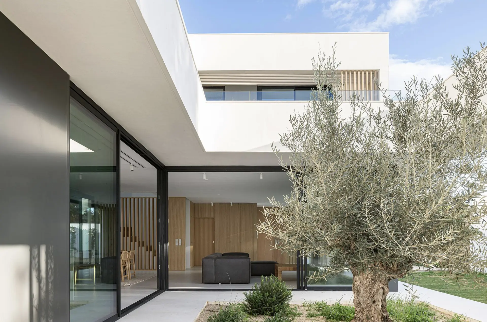
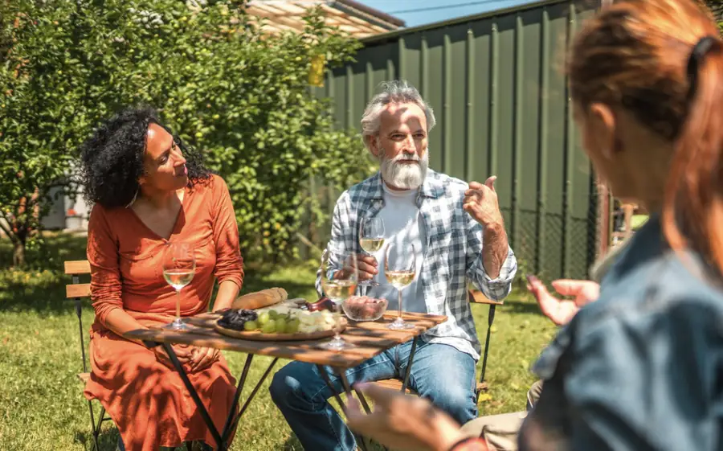
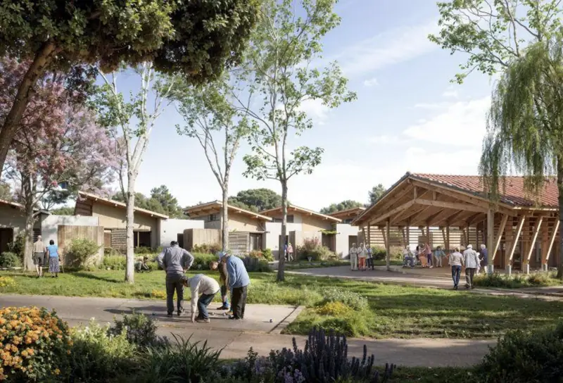
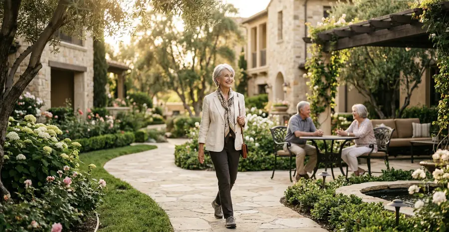
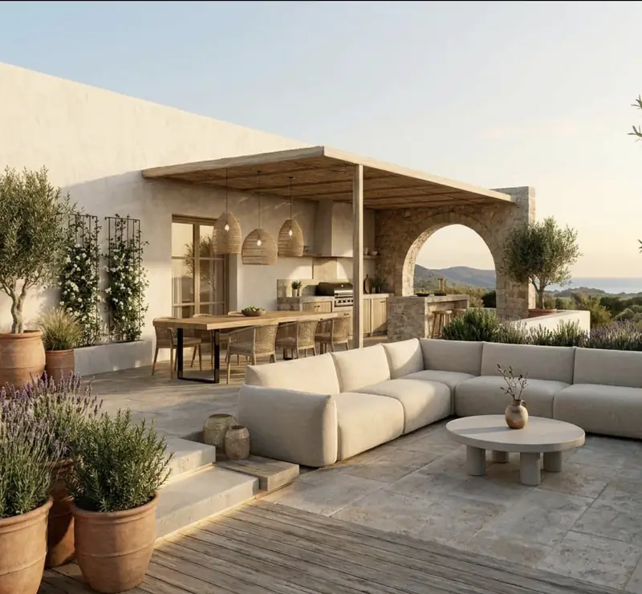
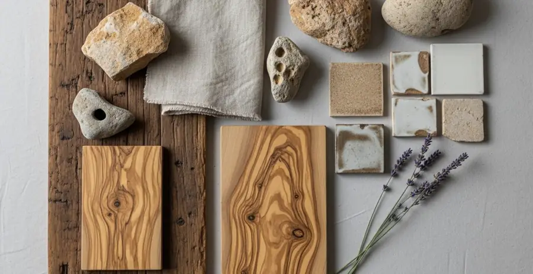

Tu espacio
Privacidad y autonomía en el día a día. Un hogar propio donde mantener tus costumbres, tus objetos y tu ritmo.

Golden Chance Senior
Un nuevo proyecto residencial sénior en el norte de España, impulsado por Golden Chance.
Porque el futuro no consiste en dejar de elegir, sino en seguir haciéndolo. Estamos desarrollando una nueva propuesta de vida para quienes quieren mantener su independencia y explorar una forma diferente de vivir esta etapa.
Proyecto en desarrollo · Primera fase
Tu espacio, tus decisiones y tu ritmo de vida.
Compartir experiencias sin renunciar a tu intimidad.
Transparencia sobre cómo funcionará el proyecto.
Planificar esta etapa con ilusión y criterio propio.

La filosofía
Hay una etapa en la que el tiempo adquiere otro valor. Elegir dónde vivir, con quién compartir experiencias y cómo organizar el día a día se vuelve más importante que nunca.
Una nueva etapa no tiene por qué significar renunciar a nada.
Una nueva forma de vivir
Ni una residencia ni una urbanización convencional: una propuesta pensada para quienes quieren seguir eligiendo cómo vivir.

Privacidad y autonomía en el día a día. Un hogar propio donde mantener tus costumbres, tus objetos y tu ritmo.

La posibilidad de compartir momentos y experiencias con personas que buscan lo mismo que tú, cuando tú lo decidas.

Un proyecto pensado para mantener intacta la capacidad de elegir: hoy, mañana y en los años que vienen.

El modelo de comunidad
Un lugar donde tener tu propio espacio y, al mismo tiempo, la oportunidad de compartir una forma de vida con personas que tienen inquietudes similares.
Los espacios comunes, servicios y la organización de la comunidad se definirán junto con el proyecto. Solo los comunicaremos cuando estén confirmados.
Qué nos hace diferentes
Un proyecto de vida en comunidad, con la experiencia de un equipo inmobiliario y jurídico detrás.
Detrás hay un equipo inmobiliario y un despacho de abogados con más de 30 años de experiencia. Nos ocupamos de la gestión técnica, jurídica e inmobiliaria para que tú puedas centrarte en decidir cómo quieres vivir.
Dar este paso suele empezar por una pregunta: ¿qué hago con mi casa? Si tienes una vivienda en España, te ayudamos a venderla o alquilarla, y te asesoramos sobre cómo encaja este cambio en la planificación de tu patrimonio y tu herencia.
Veranos suaves, paisaje verde y la tranquilidad del norte. Un proyecto pensado también para quienes llegan de otros países, con información en español y en inglés.
El proyecto
Estamos trabajando en una nueva propuesta residencial que pone en el centro la independencia, la comunidad y la planificación del futuro.
En esta primera etapa queremos compartir la visión del proyecto, escuchar a las personas interesadas y ofrecer información transparente a medida que se definan sus características.
Déjanos tus datos y te enviaremos novedades del proyecto a medida que se confirmen. Sin compromiso.
Hemos recibido tu solicitud. Te escribiremos cuando haya novedades del proyecto.
Quién está detrás
Golden Chance es una inmobiliaria de Burgos que acompaña a cada cliente con trato personalizado y seguridad en cada operación.
El equipo técnico y las entidades colaboradoras específicas del proyecto sénior se presentarán cuando estén confirmados.

Desde cualquier lugar
Este proyecto también está pensado para personas de otros países que quieren vivir su próxima etapa en España.
Información y atención en español y en inglés.
Golden Chance cuenta con el respaldo de un despacho de abogados con más de 30 años de experiencia.
Cuando se definan las condiciones, te explicaremos qué hace falta en cada paso, por ejemplo, el NIE.
¿Prefieres hablarlo cara a cara? Puedes pedir una videollamada desde el formulario.
Preguntas frecuentes
Si tu duda no está aquí, escríbenos.
Es un nuevo proyecto residencial impulsado por Golden Chance para personas que quieren vivir su etapa sénior con independencia, en un entorno que facilite la vida en comunidad.
No. No es un centro asistencial. Es una propuesta de vivienda pensada para personas autónomas que quieren seguir decidiendo cómo vivir.
El proyecto está previsto en el norte de España. El emplazamiento concreto está pendiente de confirmación; lo compartiremos en cuanto esté definido.
El modelo jurídico y las condiciones de participación se encuentran en fase de definición. Facilitaremos información detallada cuando estén confirmados.
Depende del modelo jurídico que se adopte, que todavía está en definición. Lo explicaremos con claridad —qué derechos tendrá cada participante y en qué condiciones— antes de pedir ningún compromiso.
Aún no hay condiciones económicas definidas. No publicaremos cifras hasta que estén confirmadas y respaldadas por el proyecto.
Se definirán junto con el proyecto arquitectónico. Solo anunciaremos los espacios y servicios que vayan a existir realmente.
Todavía no hay calendario. Estamos en la primera fase; informaremos de cada hito a las personas inscritas.
Depende de tu situación y de tus planes. Si tu vivienda está en España, Golden Chance puede ayudarte a venderla o alquilarla. También te asesoramos sobre cómo encaja este paso en la planificación de tu patrimonio y tu herencia.
Queremos que el proyecto esté abierto también a personas que viven fuera de España. Las condiciones de participación aún están en definición; cuando se confirmen, explicaremos con claridad los requisitos y trámites, como el NIE (número de identidad de extranjero).
En español y en inglés. Indícanos tu idioma preferido en el formulario.
Rellena el formulario y te enviaremos las novedades a medida que se confirmen. Sin compromiso.